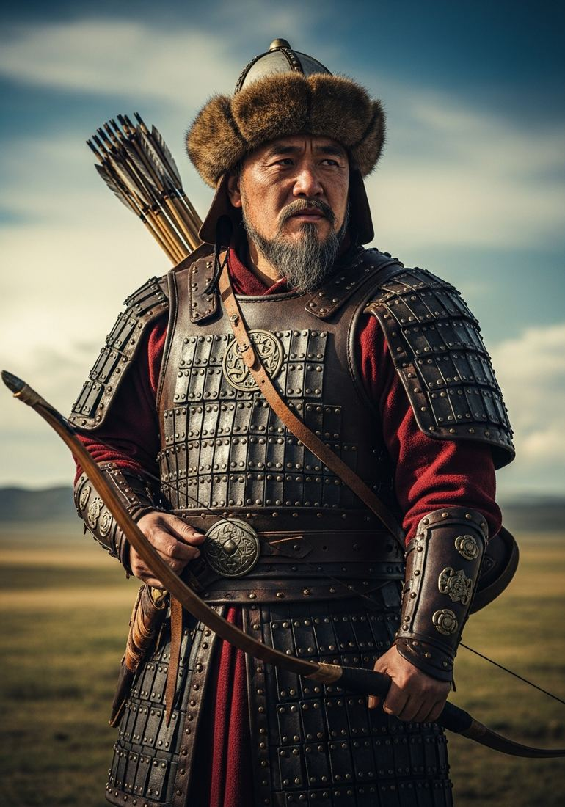
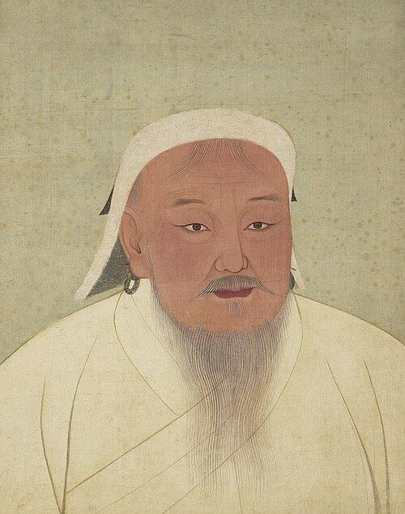
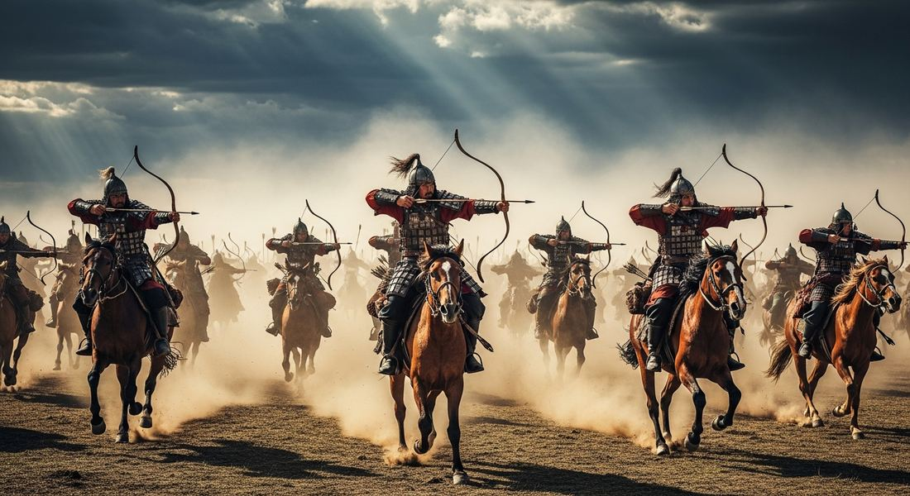
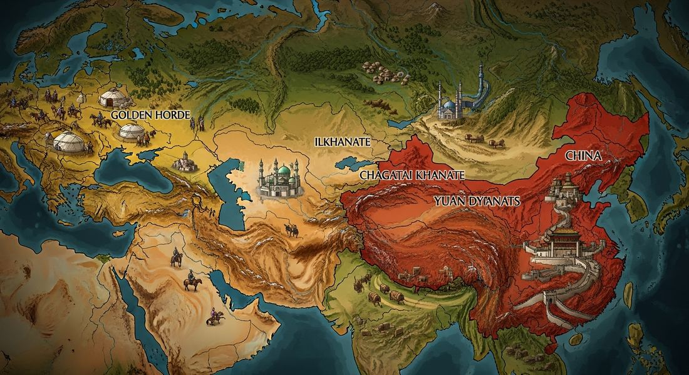
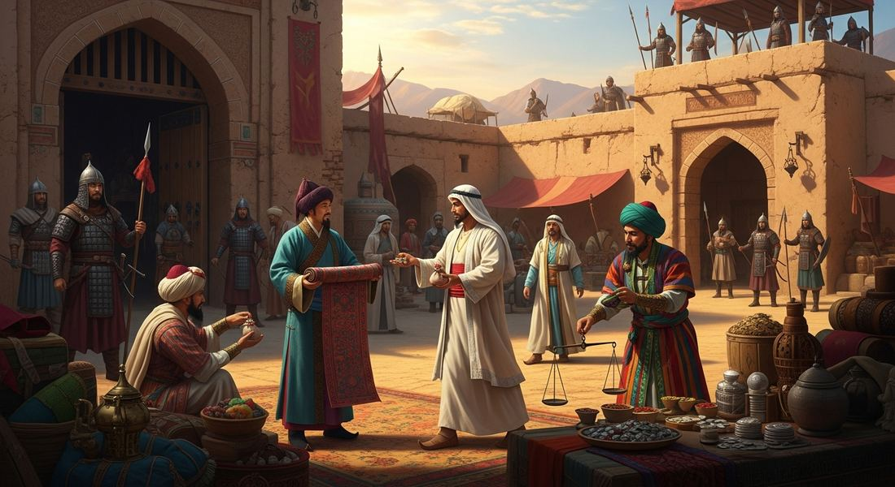
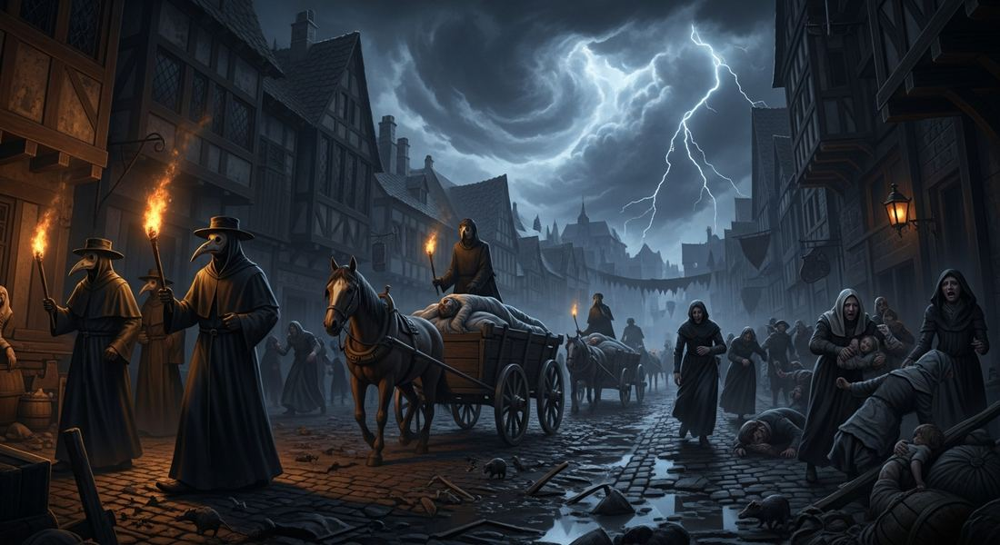

2.2 The Mongol Empire and the Making of the Modern World
- LO-A: LO: How the Mongol Empire was built: Genghis Khan unified fragmented Mongol tribes in 1206 using a combination of military genius and deliberate terror: cities that surrendered were spared; those that resisted were destroyed and their populations massacred. This was strategy, not random cruelty. It forced future opponents to calculate whether resistance was worth the cost. The resulting empire was the largest contiguous land empire in history, held together by the Yam postal relay (horse stations every 25 miles, enabling empire-wide communication in days). LO: How the Mongol Empire declined: After Genghis Khan's death, the empire split into four khanates (Yuan/China, Ilkhanate/Persia, Chagatai/Central Asia, Golden Horde/Russia). Decline came from overextension (too large to govern centrally), cultural assimilation (Mongol rulers in China and Persia adopted local cultures), and the Black Death (~1340s), which spread along their own Pax Mongolica trade routes and killed millions, including Mongol populations.
- LO-B: Explain how Mongol expansion influenced trade and communication: LO: How Mongol expansion influenced trade and communication: The Pax Mongolica (c. 1250–1350) made it safe for merchants to travel from China to Eastern Europe under a single political system for the first time in history. Marco Polo's journey (1271–1295) was only possible because of this. The Yam relay system was the world's fastest communication network for over 500 years.
- LO-C: Explain the Mongols' significance in larger patterns of…: LO: Mongols' significance in larger patterns of change: Mongol networks facilitated massive transfers of knowledge between East and West: gunpowder, papermaking, the compass, and Chinese administrative practices all moved through Mongol-controlled routes. Unintended consequence: the Pax Mongolica enabled the Black Death's westward spread. Long-term consequence: Mongol decline pushed Europeans to fund maritime expeditions to Asia, directly contributing to the Age of Exploration.
Try each question before revealing the answer.
1. A historian claims "the Pax Mongolica was built on destruction." What reasoning best evaluates this claim?
2. The Mongol Empire split into four separate khanates after Genghis Khan's death, yet trade across Afro-Eurasia expanded during this period. What best explains why political fragmentation did not stop commercial growth?
3. Marco Polo's account of his journey to China (c. 1271–1295) describes regular meals, official escorts, and consistent rules across thousands of miles. What broader historical context made this kind of experience possible?
4. Both the Roman Pax Romana and the Mongol Pax Mongolica are associated with expanded trade. What did these two historical situations have most in common as explanations for trade growth?
5. After the Mongol Empire weakened in the mid-14th century, European rulers began funding voyages to find sea routes to Asia. What best explains the connection between these two developments?
- Explain how the Mongol Empire was built and declined
- Explain how Mongol expansion influenced trade and communication
- Explain the Mongols' significance in larger patterns of change
Tap a term for its definition.
-
Definition: Born Temüjin (~1162 CE); founder and supreme ruler of the Mongol Empire. Significance: Unified warring Mongol tribes in 1206 and launched conquests that created the largest contiguous land empire in history.
-
Definition: A regional subdivision of the Mongol Empire, ruled by a khan (leader). Significance: After Genghis Khan's death, the empire split into four khanates, Yuan, Ilkhanate, Chagatai, and Golden Horde, each controlling key sections of Afro-Eurasian trade routes.
-
Definition: "Mongol Peace", a period of relative stability across the Mongol Empire (~1250–1350 CE) during which long-distance trade flourished. Significance: For the first time, merchants could travel from China to Eastern Europe under a single political system, dramatically expanding trade volume and cultural exchange.
-
Definition: The Mongol imperial postal relay system, a network of horse stations roughly every 25 miles across the empire. Significance: The fastest long-distance communication system in the world until the electric telegraph; essential for governing a vast empire and coordinating military campaigns.
-
Definition: Payments made by weaker states or peoples to a more powerful ruler in exchange for peace or protection. Significance: The Mongols extracted tribute from conquered peoples (including Russian princes for 200+ years), funding the empire and demonstrating political dominance without always requiring direct administration.
-
Definition: The Mongol-ruled dynasty of China, founded by Kublai Khan in 1271 and lasting until 1368. Significance: Connected China to the broader Mongol trade network; the destination of Marco Polo's famous journey and a key node in Silk Road commerce.
-
Definition: A way of life based on moving with herds rather than settling. Significance: The Mongols were pastoral nomads, their mobility was their greatest military asset, allowing armies to cover distances that sedentary armies could not match.
-
Definition: The spread of ideas, technologies, and practices from one culture to another. Significance: The Pax Mongolica accelerated cultural diffusion on a massive scale, spreading the Hindu-Arabic number system, Greco-Islamic medicine, gunpowder, and papermaking from East to West.
🏕️ Who Were the Mongols?
In 1200 CE, if you asked a Chinese scholar, a Persian king, or a European knight what they thought of the Mongols, they'd probably laugh. The Mongols were nomadic herders living on the vast, windswept grasslands of Central Asia, no cities, no written language, no standing army. By most measures of the time, they were considered backward.
Within 100 years, those same Mongols controlled the largest contiguous land empire in human history, stretching from the Pacific Ocean to Eastern Europe. How does that happen? It starts with one man.

🏛️ Genghis Khan and the Rise of the Empire


Born into a minor clan around 1162 CE and named Temüjin, the man who would become Genghis Khan had a brutal early life, his father was poisoned, he was enslaved as a teenager, and his wife was kidnapped. None of this slowed him down.
Through a combination of military genius, ruthless ambition, and shrewd alliance-building, Temüjin unified the constantly warring Mongol tribes. In 1206 CE, the tribes formally declared him Genghis Khan, meaning "Universal Ruler." Then the conquering started.
The Mongols were terrifyingly effective in battle for several reasons:
- Mobility, Every soldier rode a horse (often several, so they could swap between them). Mongol armies moved faster than any enemy expected, covering distances that seemed impossible.
- Psychological warfare. Cities that surrendered immediately were treated relatively well. Cities that resisted were often completely destroyed as a warning to others. Word spread fast. Many cities surrendered without a fight.
- Adaptability, The Mongols were nomads with no tradition of siege warfare, but they quickly learned from the engineers and specialists they conquered, incorporating Chinese siege technology, Persian military tactics, and more.
A Mongol soldier was essentially raised on horseback, children learned to ride before they could reliably walk, and by adulthood a warrior could shoot accurately at a full gallop, standing in the stirrups, twisting to fire backward at pursuers (a maneuver so effective enemies came to fear the "Parthian shot"). Their recurve composite bows, built from layered horn, wood, and sinew, gave them serious range: a Mongol noble's own memorial inscription boasts of a shot landing roughly 536 meters away, nearly 600 yards, about six football fields end to end, in an archery contest held after the conquest of Khwarezm. Real combat accuracy was shorter, probably 200 to 300 yards, still two to three football fields, but still far outranging most of the crossbows and shortbows their enemies carried. A Mongol army could also travel for days without stopping to hunt or cook: a rider could nick a small vein in his horse's neck, drink a cup of blood for sustenance, then seal the wound and keep riding, all without seriously harming the animal. Combined with the ability to sleep and eat in the saddle, this let Mongol forces appear where no enemy commander thought an army could possibly be.
That same adaptability had a systematic side to it. After a city fell, Mongol commanders routinely combed the survivors for anyone useful, doctors, astronomers, engineers, translators, skilled craftsmen, and shipped them elsewhere in the empire rather than killing them. Chinese siege engineers ended up helping Mongol armies batter down walls in Persia and Iraq; Persian astronomers and physicians were sent east to staff observatories and hospitals in Yuan China. It was forced relocation, not a scholarship program, but it turned the empire into a giant conveyor belt for technical knowledge, and it's a big part of why Mongol-conquered territory ended up more technologically connected than it had been before the conquest.
That policy of sparing useful specialists makes the fate of Baghdad in 1258 even more jarring, because this time the destruction was total. Baghdad was home to the House of Wisdom, a legendary library and translation institute where, for centuries, scholars had gathered, translated, and expanded on Greek, Persian, and Indian science, medicine, and philosophy. It was arguably the greatest concentration of accumulated knowledge on Earth. When Hulagu Khan's army besieged and sacked the city, they leveled the House of Wisdom along with much of the rest of Baghdad. According to accounts written soon afterward, so many manuscripts were thrown into the Tigris River that its waters reportedly ran black with ink, while other accounts describe the river running red with the blood of the scholars and citizens killed in the sack. Estimates of the death toll vary enormously, from tens of thousands to, in some medieval chronicles, over a million, and historians still debate which figure is closer to the truth. What isn't debated is the scale of the loss: centuries of irreplaceable scholarship gone in days, and the effective end of Baghdad's five-hundred-year run as the intellectual capital of the Islamic world.

🏛️ The Four Khanates. After Genghis
Genghis Khan died in 1227. His empire didn't die with him. It kept expanding for another 50 years under his sons and grandsons. But eventually, the empire was too vast to govern as one unit. It split into four regional kingdoms called khanates, each ruled by a branch of Genghis's family:

- Yuan Dynasty, ruled China, founded by Genghis's grandson Kublai Khan. This is where Marco Polo famously traveled.
- Ilkhanate, ruled Persia and parts of the Middle East.
- Chagatai Khanate, controlled Central Asia, the heart of the Silk Roads.
- Golden Horde, ruled Russia and the western steppe, exacting tribute from Russian princes for over 200 years.
The khanates sometimes fought each other, but they shared something crucial: they all sat along or near major trade routes, and they all had an interest in keeping commerce moving.
💰 The Pax Mongolica, When Violence Created Peace
Here's one of history's great ironies: the Mongols were extraordinarily violent conquerors, yet their rule produced one of the safest periods for trade in world history. Historians call this the Pax Mongolica. Latin for "Mongol Peace," roughly 1250–1350 CE.
Once the Mongols controlled a region, they had a strong incentive to keep it stable. Stable territory meant tax revenue, so administrators conducted regular censuses to know exactly how many people and how much wealth each territory owed, and the empire ran on the Yam, a relay system of horse stations spaced roughly every 25 miles that let messengers and officials move fast across thousands of miles. Merchants moving goods meant customs duties. A merchant robbed on your road was money you didn't collect. So the Mongols actively protected trade routes, built rest stops, and punished banditry severely.

The result was remarkable. For roughly 100 years, a merchant could travel from China to Eastern Europe under a single political system with consistent laws and protections. Regions that had never been connected before were suddenly drawn into the same trade network. New peoples, new goods, and new ideas entered the global exchange for the first time.
🎨 ⚙️ What Traveled Across the Empire. Cultural and Tech Transfers
With people, goods, and merchants moving freely across the largest empire the world had ever seen, ideas and technologies traveled too. The Mongol Empire became a giant pipeline for cultural exchange.
Three specific transfers the College Board wants you to know:
- Greco-Islamic medical knowledge transferred to western Europe. The Islamic world had preserved and built upon ancient Greek medical texts for centuries. Through Mongol-connected trade networks, this knowledge, including advanced understandings of anatomy, disease, and treatment, began reaching European scholars who had lost access to it.
- Numbering systems transferred to Europe. The Hindu-Arabic numeral system (the 1, 2, 3 system you use every day) spread through Mongol-era trade networks into Europe, eventually replacing the far more cumbersome Roman numerals. Try doing long division in Roman numerals and you'll understand why this mattered.
- The Mongols adopted the Uyghur script. Since Mongols had no written language, Genghis Khan commissioned the adoption of the Uyghur script to administer his empire. This let them create written laws, keep records, and communicate across vast distances, turning a band of nomads into a functioning bureaucratic empire.
☠️ The Dark Side, The Black Death
The same trade networks that moved silk, porcelain, and ideas also moved something far more deadly. The Black Death, bubonic plague caused by the bacterium Yersinia pestis, originated in Central Asia (likely in the Mongol heartland) and traveled westward along Silk Road trade routes in the 1340s.
One especially grim episode captures how directly the two were linked. In 1346, a Mongol Golden Horde army led by Khan Janibeg was besieging Caffa, a Genoese trading port on the Black Sea, when plague broke out in its own camp. According to a contemporary account by the notary Gabriele de' Mussi, Janibeg's forces catapulted the corpses of plague victims over Caffa's walls, hoping to infect the defenders, in what's often cited as one of history's earliest documented attempts at biological warfare. The Genoese inside reportedly dumped the bodies in the sea, but the plague took hold anyway, and when survivors fled by ship to Constantinople, Sicily, and Genoa, they may have carried the infection with them. Historians debate how much this one episode actually mattered, plague was likely already spreading into the Mediterranean by other routes at the same time, but the story endures because it shows so starkly how a single siege could connect a Mongol army's illness to a pandemic that would go on to kill tens of millions.

Fleas on rats. Rats on trade ships and caravan animals. Merchants moving from city to city. The plague spread with terrifying speed, reaching the Middle East, North Africa, and Europe within years. By the time it slowed, an estimated 30–60% of Europe's population was dead. China and Central Asia lost millions more.
What actually happened to a person's body made the disease especially terrifying. A few days to a week after a flea bite, the bacteria would swell the lymph nodes in the groin, armpit, or neck into painful, egg-sized lumps called buboes, which is where "bubonic" plague gets its name. That came with a high fever, chills, vomiting, and exhaustion so severe victims often couldn't stand. In the bubonic form, roughly 30–60% of untreated victims died, usually within about a week, which also means a significant share of people who caught it did survive; the disease wasn't automatically a death sentence, just a brutal gamble. Two rarer, far deadlier forms existed too: septicemic plague, when the bacteria invaded the bloodstream directly and caused bleeding under the skin that blackened patches of tissue, and pneumonic plague, when it settled in the lungs and spread through coughing, person to person, killing nearly everyone it infected, often within one to three days. Despite the name, contemporaries in the 1300s never actually called it the "Black Death", that term only became standard centuries later, and historians still debate whether it originally referred to blackened skin or was simply a translation of a Latin phrase meaning "dreadful death." Either description fit.
This is a critical lesson about trade networks: connectivity is a double-edged sword. The same routes that enriched civilizations and spread knowledge also spread disease. The more connected the world becomes, the faster everything travels, good and bad.
📉 The Decline of the Mongol Empire
By the late 1300s, the Mongol Empire was collapsing. Several forces combined to bring it down:
- Overextension, The empire was simply too large to govern effectively. Communication across thousands of miles was slow; local rebellions were hard to suppress; the khanates increasingly acted as independent states.
- The plague, The Black Death devastated Mongol populations too, weakening military capacity and destabilizing governance.
- Assimilation, In many regions, Mongol rulers adopted local customs, languages, and religions so thoroughly that they lost their distinct Mongol identity. This wasn't new tolerance, Genghis Khan's original legal code, the Yassa, was a single codified body of law applied consistently to every subject regardless of ethnicity or religion, and it had already exempted the clergy of every religion from taxation, a deliberate state policy of religious pluralism meant to keep conquered populations calm rather than rebellious. But over generations that tolerance tipped into conversion: the Ilkhanate's ruler Ghazan Khan converted to Islam in 1295, and the Golden Horde's Uzbeg Khan made Islam the state religion in the 1310s, while in China the Yuan court patronized Tibetan Buddhism and governed through the same Confucian bureaucratic exams the Chinese themselves used. Each khanate ended up looking more like the people it had conquered than like the steppe nomads who had conquered them, and the Yuan Dynasty was eventually overthrown by a Chinese rebellion (founding the Ming Dynasty in 1368).
- New powers rising, As Mongol control weakened, successor states emerged, including the Ottoman Empire, the Ming Dynasty, and others that would shape the next chapter of world history.
The Mongol Empire lasted less than 200 years, and unlike Rome or the Islamic caliphates, it left behind no lasting Mongol religion, language, or culture that conquered peoples adopted, by design, the Yassa never tried to force Mongol ways onto anyone, which is exactly why the Ilkhanate could become Muslim and the Yuan court could govern as Confucian emperors. What endured instead was structural: the administrative and legal playbook (codified law applied consistently across a diverse empire, census-taking, religious tolerance as state policy, a professional relay-based bureaucracy) that later Eurasian states borrowed from, and the trade and communication networks that, for a century, moved goods, technology, ideas, and eventually disease across the largest connected landmass in history. The Mongols didn't get remembered for what they built to last. They got remembered for what they connected.
These videos will help you review The Mongol Empire and the Making of the Modern World and solidify key concepts before your exam.
Quick, no-stimulus questions to check you followed the reading, no interpretation required, just recall and understanding.
- A religious conversion campaign that spread the Mongols' own faith and customs across the entire empire
- The Mongol name for their capital city and its surrounding administrative district
- A period of relative stability under Mongol control that made long-distance trade safer than before
- A formal trade treaty signed and ratified between representatives of the four khanates
- To let the central government communicate and coordinate across the empire quickly
- To collect tolls and taxes from merchants passing through fixed checkpoints
- To train new cavalry recruits in mounted archery before deployment
- To provide free lodging and supplies for religious pilgrims traveling to holy sites
- The four khanates were secretly reunified into a single government within a decade
- Trade had already collapsed completely before the empire split, so there was nothing left to disrupt
- European merchants organized their own forces and took over policing the trade routes
- Every khanate still profited from customs revenue, giving each one an incentive to protect trade
- Papermaking, a Chinese invention that was mistakenly believed to have originated in Europe
- Greco-Islamic medical knowledge that Islamic scholars had preserved and built on for centuries
- The Roman numeral system, which spread eastward from Rome into Central and East Asia
- The electric telegraph, developed centuries later using similar relay principles
- That the same conquest that enabled trade and connectivity also destroyed centers of learning like Baghdad
- That the Mongols specifically targeted Islamic institutions and scholars out of religious hostility
- That Baghdad was quickly rebuilt afterward with no lasting consequences for the region
- That the Mongols had no interest in capturing or holding cities, valuing only rural grazing land
- It originated somewhere in Europe and then spread eastward into Mongol territory
- European sailors brought it back to the continent from voyages along the coast of West Africa
- It spread only through direct combat between Mongol soldiers and European armies in battle
- Fleas living on rats traveled westward with merchants along Mongol-protected trade routes
- A single decisive military defeat inflicted by one powerful rival empire in open battle
- The sudden invention and widespread adoption of gunpowder weapons by their enemies
- A combination of imperial overextension, the Black Death's toll, and rulers assimilating into conquered cultures
- A single unified religious rebellion that swept across the entire empire all at once
- Administrative and legal practices, like codified law and religious tolerance, that later states borrowed from
- A Mongol religion, language, or set of cultural customs that conquered peoples ended up adopting
- Trade and communication networks that connected Afro-Eurasia for roughly a century
- A reusable model for governing a religiously and ethnically diverse territory
- A) The Mongols specifically targeted centers of Islamic learning to prevent future intellectual resistance
- B) The destruction of Baghdad permanently ended the Islamic world's role in Afro-Eurasian trade
- C) Mongol warriors were primarily motivated by religious opposition to Islamic scholarship
- D) The extreme violence of Mongol conquest could destroy established cultural centers while simultaneously creating the conditions for later commercial expansion
- A) The expansion of trade by giving merchants access to reliable official communication channels
- B) The Mongols' ability to maintain political and military coordination across the largest contiguous land empire in history
- C) The cultural integration of diverse peoples within the Mongol Empire through shared infrastructure
- D) The Mongols' ability to tax merchants who relied on the postal relay system for delivery
- A) European merchants regularly traveled to China before the Mongol period for commercial purposes
- B) The Mongol Empire completely eliminated all danger from trade routes between Europe and China
- C) Mongol political control created practical conditions, consistent protections and infrastructure, that made intercontinental travel feasible for the first time
- D) The Pax Mongolica primarily benefited European merchants rather than Asian or Middle Eastern ones
- A) Historical events frequently produce unintended consequences across multiple domains simultaneously
- B) The Mongol Empire's conquests were ultimately beneficial because of their positive environmental effects
- C) Population decline consistently and directly produces positive environmental outcomes
- D) Military conflict is more historically significant than commercial development in shaping long-term change
- A) The plague directly motivated European sailors to seek Asia by sea because overland routes were sealed off by disease-infected populations
- B) The decline of Mongol power and the disruption of the plague made sea routes relatively more attractive as overland routes became less reliable and more dangerous
- C) European maritime technology was specifically developed in direct response to the political collapse of the Mongol Empire
- D) The discovery of sea routes to the Americas was primarily motivated by European desire to escape plague conditions
Answer all three parts (A, B, C). Write your response before clicking to see sample answers.
Part A
Identify ONE way the Mongol Empire created conditions that facilitated trade in the period 1200–1450.
Part B
Explain ONE reason the Mongol conquests had devastating consequences for specific populations in the period 1200–1450.
Part C
Explain ONE way the Mongol Empire contributed to the spread of disease in the period 1200–1450.
Write a thesis before revealing. A strong thesis: restates the prompt's verb phrase, adds a quantifier ("to a great/significant extent"), and ends with because [A] and [B], where A and B are your two body paragraph arguments, not specific pieces of evidence. If you choose "to a great extent," your two body paragraphs should be reasons A and B below. If you choose "to a limited extent" instead, use the third evidence set to build both of your body paragraphs around the counterargument.